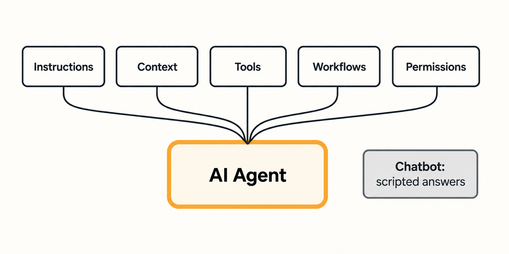
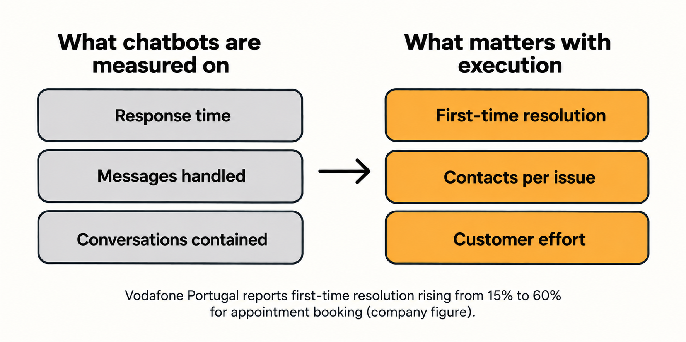

Customers don't come to support for a conversation. They come because they need something answered, changed, resolved, or completed.
For years, customer service innovation was measured by how well chatbots could mimic conversation: how natural they sounded, how fast they responded. Businesses invested heavily in making AI talk well, improving accessibility and cutting wait times. But when a request fell outside what the chatbot was built to handle, the customer still had to find another way forward.
That gap matters more in 2026. The conversation is no longer the destination; it is just one step in the process. This is driving the rise of AI agents: systems that can take on broader workflows, interact with the systems those workflows require, make decisions within set boundaries, and execute tasks on a customer's behalf—shifting the focus from generating responses to generating results.
01 — Where Chatbots Fail
The Limits of Traditional Chatbots
Traditional chatbots work from rule-based pre-defined scripts. They match what a customer types to a fixed set of intents and return a prepared answer. That holds up for simple, predictable questions like order status or store hours. It stops holding up the moment a request falls outside the script. Though some of them use flexible c onversational technology, the core working model mostly remains the same.
The issue isn't whether the answer is right or wrong; it’s what the customer actually wants. Most of the customers get frustrated with surface-level replies which doesn't help them to get a resolution. So, the frustrated customer has to look elsewhere for the actual solution—be it a refund, KYC or a plan change.
The US Consumer Financial Protection Bureau documented this pattern in its 2023 report on chatbots in consumer finance. It described "doom loops," where automated responses keep repeating unhelpful text with no way out to a human representative. One complaint in the report involved a consumer trying to refinance a mortgage whose credit report had been flagged as frozen. They could not reach a live person at Experian to find out why, and spent two weeks trying while the refinance stalled. The CFPB's broader conclusion was that chatbots handle basic inquiries well, but their effectiveness drops as problems get more complex.
None of this was a conversation problem. The bot could respond. It could not do anything about the problem, and it offered no route to someone who could.
02 - The Difference
What Makes an AI Agent Different?
Ask a chatbot how to get your refund and it will usually tell you when: within 30 days. In most cases, it won't tell you what to do because it only follows a rigid keyword matching process. An AI agent is built to go further, because it is given more to work with.
Five things make up that difference:
- Instructions: What the system is meant to do, and what it should not do.
- Context: Access to the customer's order, account and history, so it isn't answering blind.
- Tools: Connections to the systems where the work happens, such as billing, orders or account records.
- Workflows: The defined steps for a task like a refund or a plan change.
- Permissions: What it is allowed to change, and the limits on it.

Take any of these away and you are left with a chatbot with better wording. Put them together and the refund question gets a different answer: the agent can check the order, start the refund, and tell the customer what has been done.
HSBC describes this shift in its own words. Its Corporate and Institutional Banking business uses agents to manage customer enquiries globally, across products, markets and regulatory requirements. The bank reports that customer resolution time has fallen by more than 30% since January 2025. The same bank is clear about the limit: when complexity, risk and uncertainty are highest, it says customers still want a person toapply judgement. (https://www.hsbc.com/news-and-views/views/hsbc-views/our-strategy-built-on-trust-accelerated-with-ai)
The boundary matters just as much. An agent can only act within the workflow and permissions it has been given. That is where its strength comes from, and, as the later sections show, where it runs out.
03 - The Shift
The Shift from Interaction to Execution
When a chatbot's job is to reply, success is measured by how quickly and how often it replies:
- Response time
- Messages handled
- Conversations contained
None of those metrics show whether the customer's issue is resolved as it is outside the scope of the chatbot. The net result is a dissatisfied customer who needs human intervention to solve the problem and time wasted with the chatbot.
Execution changes what gets measured. If a system can complete the task, the useful questions become whether it was resolved the first time, how many touchpoints it took, and how much the customer had to self-serve.
Vodafone offers a measured example. In Portugal, its generative AI virtual assistant SuperTOBi handles appointment booking, and Vodafone reports that first-time resolution rose from 15% to 60%, with its online net promoter score up 14 points to 64. Vodafone calls it a virtual assistant, not an agent, and one trade outlet pointed out that booking an appointment is not the hardest task. Both are fair points. But the measure is the right kind: it counts whether the job got done, not how well the system talked. https://www.vodafone.com/news/newsroom/technology/meet-super-tobi-vodafone-s-new-generative-ai-virtual-assistant-now-serving-customers-in-multiple-countries

04 - The real question
What This Means for Customer Service Teams
- Status checks
- Plan changes and
- Record updates
move to the system. What stays with people are the exceptions: that don't fit the script, carry risk, or need someone to make a call.
JPMorgan Chase shows both sides. Its CFO has named back-office functions such as payment processing, statements and account services as prime targets for automation, while the bank keeps recruiting where people drive revenue, such as relationship bankers, advisors and branch staff. CEO Jamie Dimon has said some employees have been displaced by AI and that the bank is preparing to offer them other roles. These comments cover the whole bank, not only service teams, but the pattern holds: routine work shrinks and judgment work grows.
For service leaders, that makes the handoff a central design question. A person who receives an exception needs the full case already in front of them, so the customer never has to explain it twice.
05 - The Change
How the Support Architecture Changes
Introducing AI agents into customer service requires more than adding another interface. The workflows, systems and information behind the service need to work together.
Consider a customer whose refund request cannot be completed because a payment record is missing. The agent should be able to pass the case to a human representative with the transaction details, checks already completed and the reason the workflow stopped. Without that context, the customer may have to repeat the entire request.
Each workflow needs documented steps, clear conditions and rules for handling exceptions. System access and permissions must match those requirements. When a request falls outside the defined workflow, the system needs a clear route to human intervention.
The objective is to reduce unnecessary manual work on routine requests while ensuring that complex cases reach the right person with the necessary context.
06 -
What to Measure, and Where
Response time alone cannot show whether an AI agent is doing its job. Businesses need to measure what happens between the initial request and the final outcome.
For example, a refund workflow should be measured by whether the money was returned, not whether the system sent a confirmation message. A plan change should be checked against the customer's subscription and billing records. A KYC update should be measured by whether the required validation or approval was completed, not simply whether documents were collected.
Businesses should also track where workflows fail, how often missing information or system errors interrupt execution, and how frequently human intervention is required. These measures reveal where the process needs improvement.
A closed conversation or ticket does not establish that the underlying problem has been resolved. The outcome must be checked against the task itself.
The Conclusion
Service Is Moving Beyond Conversation
Customer service technology has made it easier to handle interactions at scale. But handling an interaction and resolving a customer's problem are not the same thing.
AI agents extend what customer-service systems can do by combining instructions, context, tools, workflows and permissions to carry out defined tasks. Their effectiveness depends on how well these elements work together, whether outcomes can be verified and whether the system recognises when a person needs to step in.
For businesses, the question is not simply how quickly a system can answer. It is which requests it can reliably complete, what happens when it cannot, and how the business knows the problem has actually been resolved.